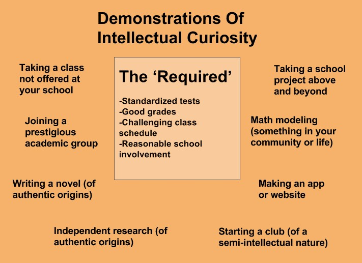

Intellectual curiosity is the trait that is absolutely crucial to show through your application; it is the trait that admissions officers often value the most.
Intellectual curiosity is the desire to learn because of a genuine interest or passion. An intellectually curious person is constantly learning new things in their free time simply because it fascinates them.
The truly successful people are not those who study and get the grades for the sake of college, to impress others or for any other external reason. Those with a genuine passion for learning always surpass those without. This is intuitive logic but the real question is: how do colleges decide whether a student is intellectually curious or simply going through the motions?
There are certain things in a student’s application that help strengthen their case for being ‘intellectually curious.’ Taking a summer class or class not necessary for high school is one example. Doing independent research on a subject that fascinates them is another. There are multiples way to show this trait, but it's important that it is genuine. For example, doing research on how the mitochondrial DNA of rats is affected throughout each generation is cool and all- but is that really genuine intellectual curiosity for you?
Showing intellectual curiosity requires going above the required and the 'normal':

I’ll use an example of what I did over the summer to show independent research of a more authentic origin. The area I live in- Horsham, PA,- had some turmoil following a lowering in the acceptable limits of a certain chemical in the water supply. With the new limits, the Horsham water supply was found to be in excess of this chemical. I made it a research goal to learn about this and eventually helped find the point of use filter that best filtered this chemical as traditional filters are surprisingly ineffective.
I only talk about this to show an example of how something can have a more genuine origin of- ‘wow I actually want to learn about this’ rather than ‘let’s pad my application.’ The key is to be motivated by the former and show that accurately through your presentation of what you did.
The Importance of Intellectual Curiosity
As the admissions officer reads your application determining your level of intellectual curiosity is one of the biggest things they do and is, of course, a very subjective process. It is crucial to keep strengthening your case for having intellectual curiosity in a genuine and cohesive manner.
I’m sure a lot of you have seen the “this college essay got this girl into 5 Ivies and Stanford” essay. If you haven’t, the essay is a recounting of a story of her as a child running through Costco and being curious about things. Why is this considered such a ‘good’ essay? Sure it is fairly well written and semi entertaining, but far more importantly it shows a genuine intellectual curiosity. Through this essay she argues that intellectual curiosity is not just a trait she possesses but is a fundamental, core, defining trait for her established at a very young age.
You don't have to use your essay to show your intellectual curiosity as you can show it throughout the application or in other ways. But it certainly makes for a good essay if delivered correctly and genuinely.
There is nothing inherently wrong with being externally motivated; in fact, most people are often driven by external factors. Competing with peers, winning the pride of parents/ faculty, and earning admission into a prestigious university are all examples of strong external motivators.
The motivation that is often more likely to endure and manifest itself in future successes, though, is internal/ intrinsic motivation.
If you compete with yourself then you don't need external reference points to accomplish and improve. Your accomplishments are byproducts of your internal motivators. For example, starting a club to help feed those in the local community can be a byproduct of a strong empathetic motivator. Getting good grades can be a byproduct of intellectual curiosity.
Intellectual curiosity and intrinsic motivation are inherently connected because
intellectual curiosity is an example of an intrinsic motivator. A lot of traits can be intrinsic motivators.
Showing your intrinsic motivators and internal drive is crucial to constructing a compelling application.
When I stress the importance of ‘authentic/ genuine origins’ of the demonstrations of intellectual curiosity in the above section, I am saying- doing what you do because of an intrinsic motivator can be more powerful and more likely to result in serious achievement.
Showing that an achievement is a byproduct of intrinsic motivation grants more credibility to the achievement, makes your application more cohesive, and allows you to show an integral part of your character.
Showing your character is thus not restricted to the college essay, as the rest of your application can (and should) do so. If you do this effectively you can achieve what admissions officers refer to as a ‘cohesive application.’
Intrinsic motivation is, in some ways, an overarching theme of most compelling college applications. I will expand upon it more in the coming ‘College Essay’ section.
Admissions officers are human. If they don’t like you, they won't accept you. Showing meanness or, really, not showing any kindness kills your chances. Colleges don’t want the smartest kids; they want the smartest, kindest, most intellectually curious kids. That group of kids will do better together than the smartest kids would.
This is why having community service and things that demonstrate a genuine caring for others is so important. Just racking up community service hours, though, is not the best way to go about it. Just like with demonstrating intellectual curiosity it is important that your kindness is displayed through a genuine and authentic origin.
Initiating your own community service event, volunteering at a children’s hospital, and starting a club to help others are all examples of showing kindness. This can be strong if kindness is a defining trait for you, but if it isn’t (and that’s okay) you won’t want to do or won’t have done these types of things.
Still, it is crucial to show some kindness even if it is not your strongest trait.
Colleges have too many kind, smart applicants to accept any unkind ones.
While stressing the importance of establishing yourself as likeable in the ‘kindness’ section, it seems fitting that I talk about leadership positions next.
This is one of my more opinion-based ideas.
Most high school clubs are primarily run by the advisors (teachers) and colleges are aware of this. Being in a leadership position shows that you were brave enough to go for it.
Having election-based leadership positions is often more valuable; leadership is a great indicator for admissions officers of your likeability and how respected you are amongst peers.
Positions like Student Body President or Student Council President are often quite valuable- colleges know that most of the students in your school voted for you.
Being well-respected is, after all, the first step to becoming a leader.
I will address the controversial idea of diversity in college admissions, but only because it relates to how you present yourself.
Colleges look to construct a diverse class of students that will bring to the table different experiences, backgrounds, and interests. This helps their students learn about the world and become more open-minded as they are exposed to a variety of perspectives.
Colleges don’t discriminate against race but rather similarity.
Races are often good indicators of different backgrounds and experiences, though.
This article from BusinessInsider has quotes from a former Dartmouth Admissions Officer about the ‘secrets’ of admissions. It mainly focuses on race, though.
One quote I’ll share is,
"you do find that some Asians can be disadvantaged in the process, and not only because admissions committees think about Asians in a specific way, but because recommenders do too. When reading recommendations you see these words—"diligent," "hardworking"—because people tend to see East Asians in a certain way. You rarely see "creative" or "strong intellectual bent," and they are less likely to be seen as "freethinking." Same with issues of character. A lot of secondary teachers find it difficult to connect culturally with Asian Americans and the type of things they end up doing, so they won't see as much talk about character."
http://www.businessinsider.com/secrets-of-dartmouth-admissions-office-2012-10
I share this to stress the importance of differentiating yourself in the college process particularly if you are in the more ‘common’ demographics. If you understand all the other intangibles that I discuss and understand the process, though, you are on the right track to differentiating yourself as a candidate.